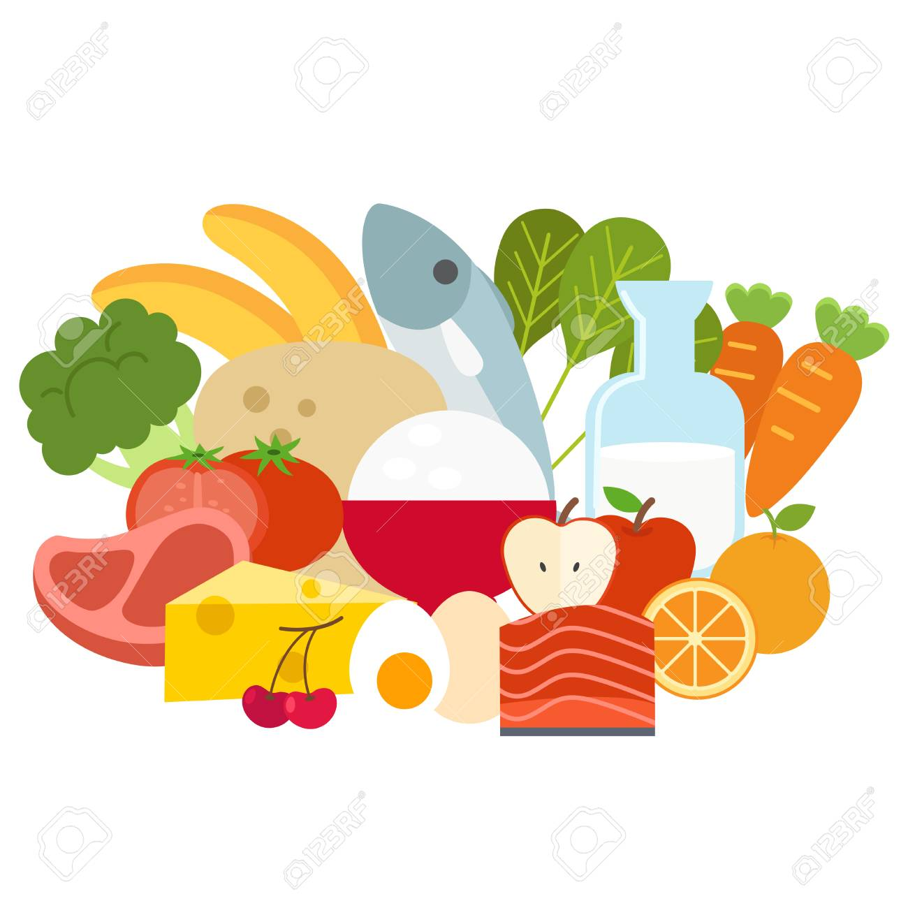
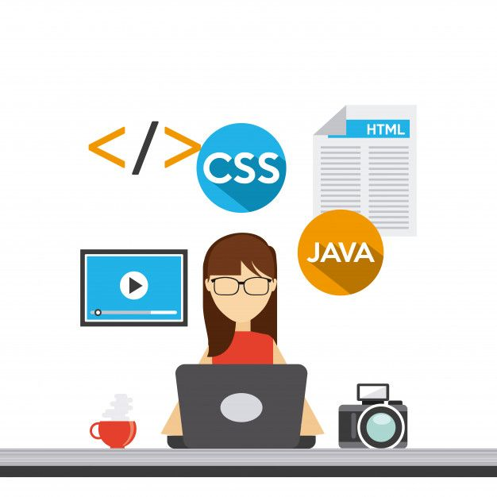

SOBRE MI
Mi nombre es Manuela Sánchez, tengo 27 años. Vivo en la ciudad de Florida. Soy Licenciada en Nutrición, pero siempre me gustó la tecnología. A pesar de que hoy en día me dedico a la Nutrición, sé que no es lo que realmente me gusta, por lo tanto decidí incursionar en el mundo del desarrollo web a través de Jóvenes a Programar!

